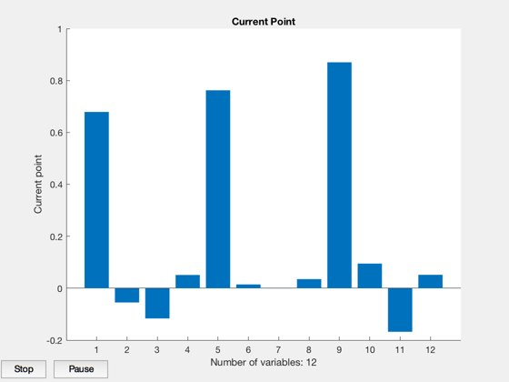
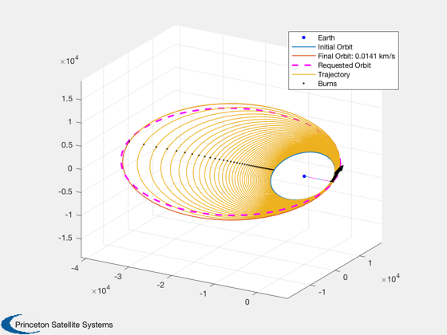
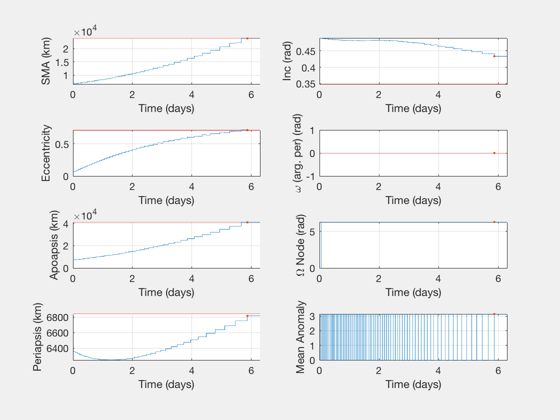
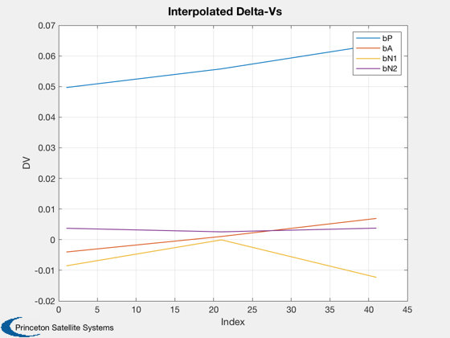
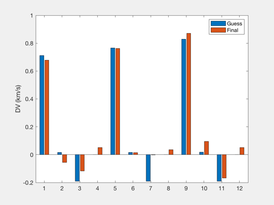
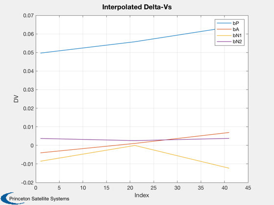
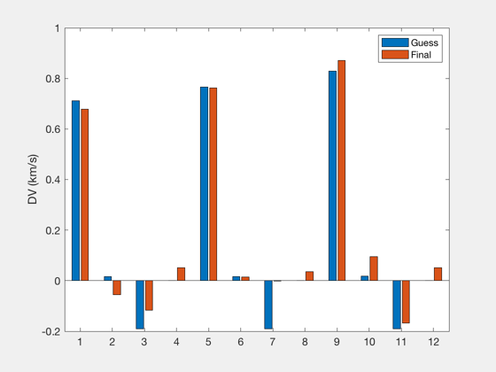

Contents
Impulsive 4X optimization of LEO to GEO with interpolated inner laps
LEO to GTO with some plane change.
When doing multiple runs with the same number of key laps but increasing numbers of tweens, convergence can be faster if the previous results are used as an initial guess - set "restart" to true.
See also: DVHohInc, OptimizeImpulsive4X, MassCostLinearFun
%--------------------------------------------------------------------------- % Copyright (c) 2018 Princeton Satellite Systems, Inc. % All rights reserved. %--------------------------------------------------------------------------- % Compare same # revs, different # key laps: % 3: 180, 240, 300 % 4: 120, 160, 200
User Parameters
For example, if nKey is 3 and nTween is 20, converges in <40 iterations.
nKey = 3; nTween = 20; restart = false; % if nKey is changed must use false % Initial conditions wArg = 0; % pi/2; elInitial = [6700 28*pi/180 0 wArg 0.05 0]; elFinal = [24000 20*pi/180 0 0 0.715 0.1]; % Analytical solution (Hohmann) Di = elFinal(2)-elInitial(2); [dvT, dv1, dv2, Di1, Di2] = DVHohInc( elInitial(5), elInitial(1), elFinal(5), elFinal(1), Di );
Optimization
frame = 1; data = OptimizeImpulsive4X; data.keyLaps = nKey; data.tweenLaps = nTween; % Total laps are (key - 1)*tween + 1 totalLaps = (data.keyLaps-1)*data.tweenLaps + 1; fprintf('Total number of laps: %d\n',totalLaps); data.elementMask = [0 1 0 0 0 0 1 1]; data.doInitial = true; if restart data.doInitial = false; end % propulsion system costFun = @MassCostLinearFun; costData = MassCostLinearFun; costData.m0 = 500; costData.iSp = 1000; costData.eta = 0.6; costData.sigma = 350; %{ % remove effect of propulsion system costData.sigma = inf; %} data.costFun = costFun; data.costData = costData;
Total number of laps: 41
run
if restart data.dvsPrev = out.keydVsF; end [burns, elOutput, out]=OptimizeImpulsive4X(elInitial,elFinal,[],data); OptimizerReport(out) [sysMass,masses,impulses] = MassCostLinearFun(burns,elInitial,data.costData,OTFrame('polar')); PlotImpulsiveTrajectory(elInitial, burns, elFinal); PlotElementsImpulsive(elInitial, burns, [], elFinal); dVs = reshape(out.tweendVsF,4,[])'; [time,tlabl] = TimeLabl(out.absTimes'); Plot2D(time,out.burns(:,1)',tlabl,'DV','Delta-V Magnitude') dVs = reshape(out.tweendVsF,4,[])'; Plot2D(1:size(dVs,1),dVs,'Index','DV','Interpolated Delta-Vs') legend('bP','bA','bN1','bN2') NewFig('Initial and Final Key DVs'); bar([out.dVs0;out.keydVsF]') ylabel('DV (km/s)') legend('Guess','Final') %--------------------------------------
Calculating initial feasible solution.
First-order Norm of
Iter F-count f(x) Feasibility optimality step
0 13 2.120860e+02 6.020e-07 8.338e+01
1 35 2.087668e+02 8.689e-04 4.465e+01 1.083e-01
2 50 2.020279e+02 2.413e-01 2.245e+06 1.083e-01
3 68 1.958896e+02 3.436e-01 3.322e+01 1.083e-01
4 90 1.958470e+02 2.473e-01 7.888e+01 2.368e-02
5 105 1.953837e+02 2.553e-01 1.963e+03 1.184e-02
6 123 1.944371e+02 2.536e-01 4.649e+01 1.184e-02
7 140 1.944373e+02 2.420e-01 4.668e+01 3.479e-05
8 157 1.944183e+02 2.420e-01 2.798e+01 4.133e-03
9 174 1.969220e+02 2.373e-01 3.175e+01 8.288e-02
10 189 1.955223e+02 2.610e-01 1.658e+06 4.144e-02
11 208 1.955819e+02 1.617e-01 2.820e+01 1.484e-02
Converged to an infeasible point.
fmincon stopped because the size of the current step is less than
the value of the step size tolerance but constraints are not
satisfied to within the value of the constraint tolerance.
Total Delta-V (km/s):
2.56265268287661
Number of burns:
82
Initial elements, target, achieved:
Columns 1 through 3
6700 0.488692190558412 0
24000 0.349065850398866 0
23853.073979218 0.433520468882648 6.28318530717959
Columns 4 through 6
0 0.05 0
0 0.715 0.1
0 0.714246396331086 3.14159265358979
Mission duration:
5.86818 Time (days)
Cost value:
195.581864846181
Iterations:
12
Constraint value:
0.161692396923858
Elapsed Time:
14.9138 sec
System mass:
195.582 kg
Masses:
114.988606319605 9.19908850556837 71.3941700210084
     
 